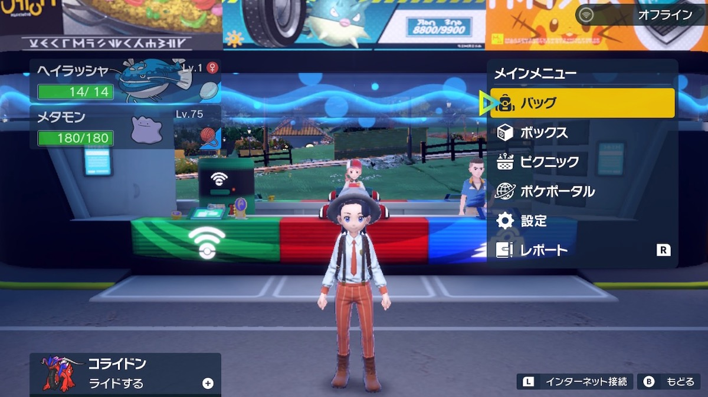
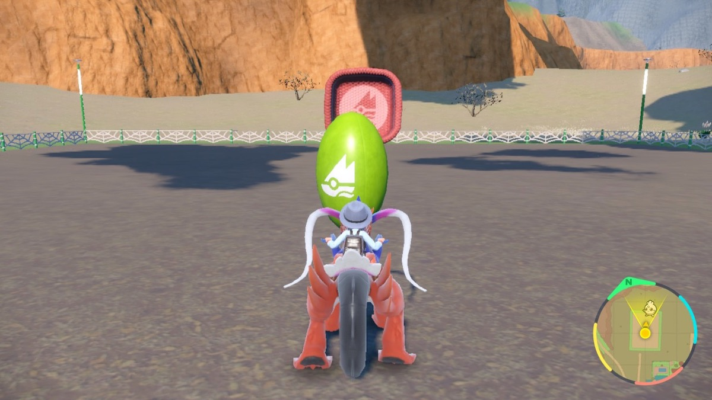
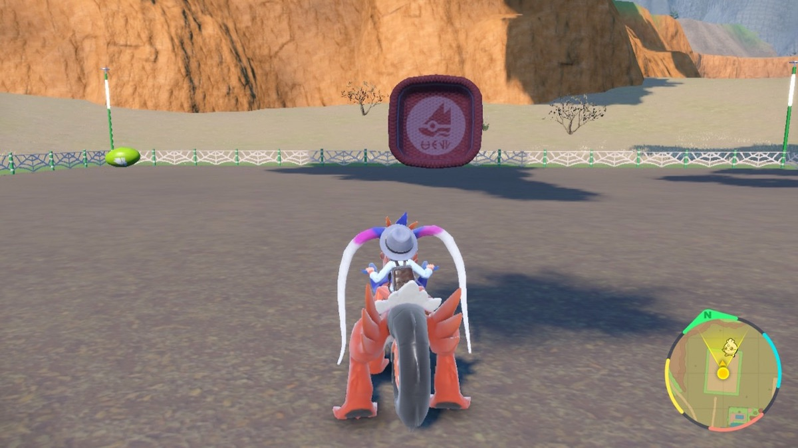
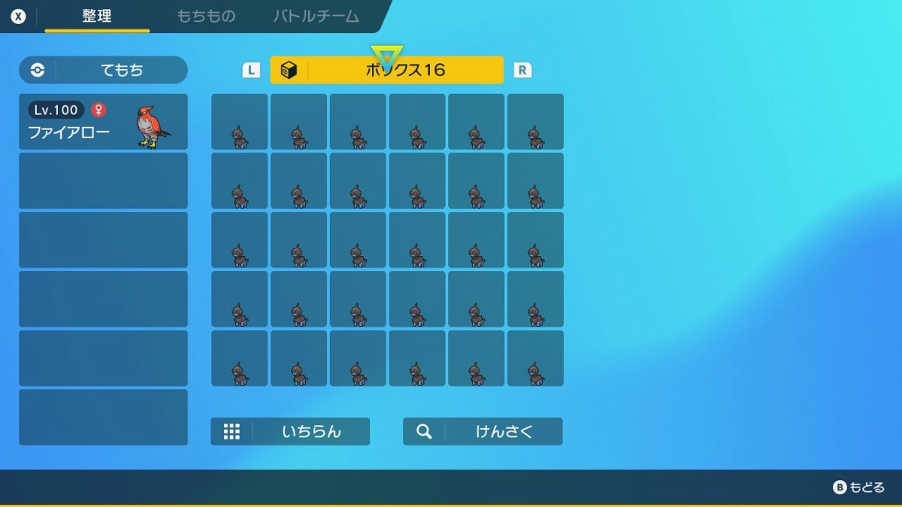
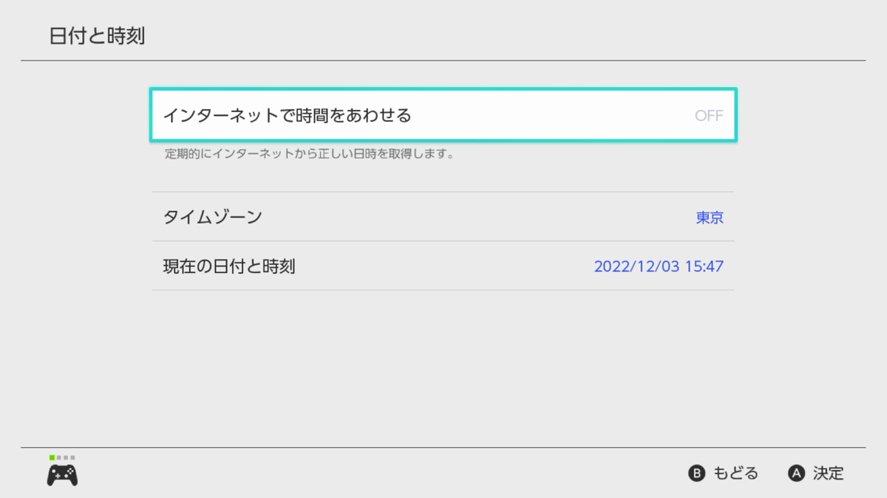
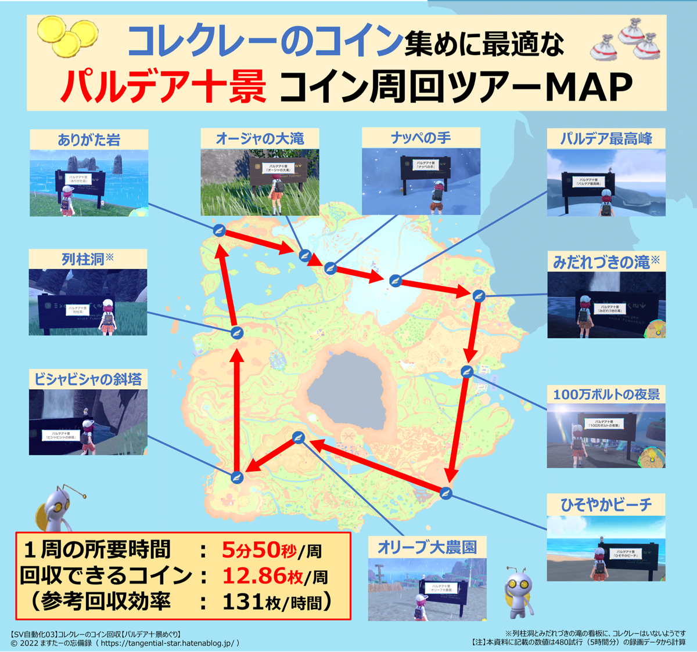
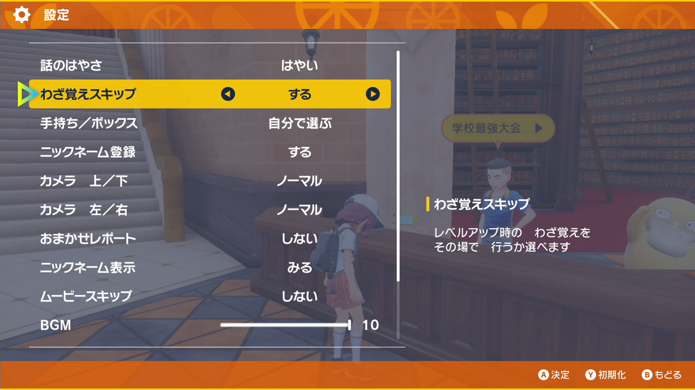

機能ごとの説明
A連打
Aボタンを押し続ける。
- スタート位置
- どこでも
- 聞かれる数
- なし
卵を受け取る
コサジの小道の灯台へ飛んでピクニック → サンドイッチでタマゴパワー → 30分間、1分ごとにバスケットから卵をもらう → プラトタウンへ戻る、をくり返す。
スタート前にやること
- ピクニックとサンドイッチのチュートリアルを終える
- 「17 スーパーピーナッツバターサンド」のレシピを解放し、材料（バナナスライス・ピーナッツバター・バター・ピック）を回数分買っておく
- 手持ちは親の2匹だけ
- ボックスに十分な空きを作る（1回で50個前後もらう）
- スタート位置
- プラトタウンに「そらをとぶ」した着地点
- 聞かれる数
-
- ピクニックの回数の10の位
- ピクニックの回数の1の位
例：3回 → ①押さない ②3回
- 終わり
- 本体がスリープする

スタート位置：プラトタウンの着地点（ポケセンのそば）（画像：ポケモニット）
卵を孵す
ボックスの卵を左の列から5個ずつ手持ちに入れ、ライドで走って孵す。孵ったポケモンはボックスに戻す。
スタート前にやること
- 手持ちは特性「ほのおのからだ」などのポケモン1匹だけ
- 連れ歩きなし、ライドしていない状態にする
- 卵を敷き詰めたボックスを並べ、ボックスを開いたときに最初の卵のボックスが出るようにしておく
- 卵は同じ歩数のものだけにする
- スタート位置
- セルクルタウン西から北にある「オリーブころがし」の柵の中（真ん中あたり。オリーブは端に寄せておくとなお良い）
- 聞かれる数
-
- 卵のサイクル数（サイクル数の表）
- ボックス数の10の位
- ボックス数の1の位
例：サイクル20の卵を3ボックス → ①4回 ②押さない ③3回
- 終わり
- 本体がスリープする

スタート位置：オリーブころがし場の柵の中（まん中あたり）（画像：ポケモニット）
ボックス：タマゴをすき間なく入れておく（画像：ポケモニット）
ボックスのポケモンを逃がす
ボックスのポケモンを左上から順に逃がす。決めたボックス数を逃がしたら止まる。逃がしたポケモンは戻らない。
スタート前にやること
- 逃がすボックスは30匹すべて埋めて並べる（空きやタマゴがあるとずれる）
- ボックスを開いたときに、最初に逃がすボックスが出るようにしておく
- スタート位置
- フィールドで、メニューを閉じた状態
- 聞かれる数
-
- ボックス数の10の位
- ボックス数の1の位
例：2ボックス → ①押さない ②2回
- 終わり
- 本体がスリープする

ボックス：30匹ぜんぶ埋める（空きやタマゴはダメ）（画像：ポケモニット）
競り
競りでA連打して買う → セーブ → 日付を1日進める → ゲームを再起動、をくり返す。
スタート前にやること
- スタート位置
- マリナードタウンの競り会場の受付の前
- 聞かれる数
- なし
- 止め方
- 1秒長押し
コレクレーのコイン
パルデア十景を「そらをとぶ」で回り、看板のそばのコレクレーからコインを拾う → セーブ → 日付を1日進めて再起動、をくり返す（1周6分くらい）。
スタート前にやること
- パルデア十景にすべて行っておく
- ライドから降りておく
- ひそやかビーチに「そらをとぶ」して、正面に看板が見える状態（カメラ・主人公とも東向き）でセーブする
- スタート位置
- 上のセーブをした場所
- 聞かれる数
- なし
- 止め方
- 1秒長押し。野生のポケモンと戦闘になったときも長押しで止める
飛び先の近くにテラレイドがあると、カーソルが吸われることがある。

本体設定：「インターネットで時間をあわせる」をOFF（画像：ますたーの忘備録）
パルデア十景の看板をめぐるルート地図（画像：ますたーの忘備録）
どうぐプリンター 乱数
決まった日時に合わせてプリンターを回し、チャンスタイム → ねらったアイテムの10連、をくり返す。
スタート前にやること
- プリンターの改良を最後まで終え、素材とBPをためておく
- 研究員に話しかけ、プリント回数を10連にしておく
- 本体の時計を2050年1月1日 0時0分にする
時計を合わせたら、40秒以内にスタートする。
- スタート位置
- 研究員に話しかけられる位置
- 聞かれる数
-
- ねらうアイテム（押す回数で選ぶ）
- 1回：マスターボール5・ヘビーボール1
- 2回：いろんなボール10個（押さないときもこれ）
- 3回：コンペボール5（5連）
- 4回：特性パッチ9
- 5回：虹のテラピース57
例：特性パッチをねらう → ①4回
どうぐプリンター 回数指定
おまかせでプリンターを回す、を決めた回数くり返す。日付は変えない。
スタート前にやること
- スタート位置
- 研究員に話しかけられる位置
- 聞かれる数
-
- 回す回数の100の位
- 回す回数の10の位
- 回す回数の1の位
例：53回 → ①押さない ②5回 ③3回
- 終わり
- 決めた回数を回したら止まる
学校最強大会
A連打で学校最強大会をくり返す。お金稼ぎやレベル上げに。
スタート前にやること
- 手持ちの先頭にLv100の強いポケモン（ハバタクカミなど）
- 技のいちばん上を強い技にする
- スタート位置
- 学校最強大会の受付の前
- 聞かれる数
- なし
- 止め方
- 1秒長押し
先頭が倒れると止まる。

設定の「わざ覚えスキップ」を「する」に（画像：ますたーの忘備録）
テラレイド ホスト（ローカル）
参加するもう1台のSwitch（ゲスト）が必要。ゲストは画面のあいことばを入れて参加する。
同じテラレイドをローカル通信で募集 → 戦闘 → ゲームを再起動、をくり返す。
スタート前にやること
- 報酬の良いテラレイドを見つけ、Aで始められる位置でセーブしてソフトを終了する
- 本体の時計を、同じ日付のうちで巻き戻しておく（日付が変わるとレイドが変わる）
- 手持ちの先頭にレイド用のポケモン。使う技をいちばん上にする
- スタート位置
- レイドの結晶に話しかけられる位置
- 聞かれる数
-
- レイドの種類
- 押さない：一撃で倒せないレイド（★6など）。ホストも攻撃する
- 1回以上：一撃で倒せるレイド（メタモン、★3・4など）。ホストは攻撃しない
例：★6 のレイド → ①押さない
- 止め方
- 1秒長押し
BP集め（そらとぶタイムアタック）
藍の円盤の「そらとぶタイムアタック」初級をくり返してBPを集める（1周約90秒で10BP）。
- スタート位置
- そらとぶタイムアタックの受付の前
- 聞かれる数
- なし
- 止め方
- 1秒長押し
雨の日は処理落ちでずれやすい。
素材集め（その場でレッツゴー）
Rでレッツゴー → 決めた秒数待つ → Rで戻す、をくり返す。戦闘になったり色違いが出たりすると止まる。
スタート前にやること
- 手持ちの先頭にレッツゴー用の高レベルのポケモン
- ポケモンが湧き続ける場所へ行く（どこでもいい。おすすめはキタカミの地獄谷近くの洞窟の、左の岩場で南の窪みを向く場所）
- Lでカメラを向けたい方に合わせる
- スタート位置
- 上の場所
- 聞かれる数
-
- 待つ秒数の10の位
- 待つ秒数の1の位
例：20秒 → ①2回 ②押さない。どちらも押さなければ15秒
- 止め方
- 1秒長押し
Switch 1 ／ Switch 2 の切り替え
1秒長押しするたびに Switch 2 ⇔ Switch 1 が切り替わる。設定は保存される。
- 今の設定
- 白の点滅で分かる（1回＝Switch 1、2回＝Switch 2）。挿した直後にも出る
- 変わること
- 青の機能の日付の変え方と、コレクレーのコインの「そらをとぶ」のカーソル移動時間
Switch 1 で日付を変えるときは、ホームにソフトが4本以上並んでいる必要がある。
日付を1日進めるテスト
ホームの設定で日付を1日進めて、ゲームに戻って止まる。日付の変え方がずれていないか確かめる用。
- スタート位置
- ゲーム画面